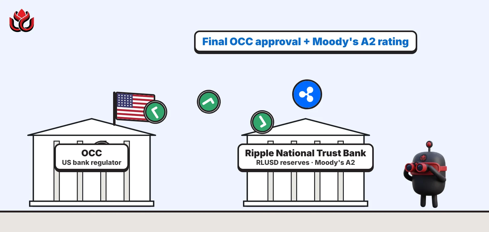

RLUSD's big week: a federal trust bank on Monday, an A2 Moody's rating on Tuesday
Ripple's $2.5 billion stablecoin won final OCC approval for a national trust bank to hold its reserves, then got an investment-grade A2 rating from Moody's a day later. It still trails PayPal's PYUSD.

Key points
- On October 26, 2026, the OCC gave Ripple final approval for a national trust bank that will manage the reserves behind its RLUSD stablecoin.
- A day later, Moody's rated RLUSD A2, investment grade, citing reserves held mostly in short-term US government assets and cash at BNY.
- RLUSD was worth about $2.43 billion on November 2, about $420 million behind PayPal's PYUSD.
 What DeepSea's data shows
What DeepSea's data shows
RLUSD was already drawing money into Asian exchanges before its big week. In the week of October 12 to 18 it was the top net deposit token on Asian exchanges, with $58.39 million in and $14.60 million out, a net inflow of $43.80 million, according to DeepSea's weekly report. US and European exchanges saw a smaller net inflow of $4.03 million.
RLUSD also turned up in the Binance breach. DeepSea reports that issuers froze 40.5 million RLUSD linked to the attack, but only after 48 million RLUSD had been sold on decentralized exchanges. DeepSea does not say which company carried out the RLUSD freeze.
Data: DeepSea (desea.io), checked November 1, 2026, 11:07 p.m. ET.
Two approvals in two days
Ripple's dollar stablecoin, RLUSD, collected two stamps of approval in two days. On Monday, October 26, 2026, Ripple said the Office of the Comptroller of the Currency (OCC), the US national bank regulator, had granted final approval for Ripple National Trust Bank. On Tuesday, October 27, Moody's assigned RLUSD an A2 long-term and a P-1 short-term deposit rating.
A2 sits in the upper half of Moody's investment-grade scale, and P-1 is its top short-term grade. The rating applies only to RLUSD issued natively on the XRP Ledger and Ethereum by Standard Custody & Trust Company, the Ripple subsidiary that issues the coin.
What the trust bank can do
The charter lets Ripple National Trust Bank manage the segregated reserves backing RLUSD, act as collateral trustee of those reserves for RLUSD holders, and provide fiduciary digital asset custody, Ripple said. Final approval followed a conditional OCC approval in December 2025.
RLUSD itself will still be issued by Standard Custody & Trust Company, a limited-purpose trust company regulated by New York's Department of Financial Services. The federal charter adds OCC supervision on top. BNY is the primary reserve custodian, and Ripple publishes monthly third-party attestations of supply and reserves.
Chief executive Brad Garlinghouse said Ripple has long argued that "crypto and banks work better together." He said the charter gives a stronger base for RLUSD and for Ripple's institutional products in payments, custody and capital markets.
Ripple said it will keep working with the OCC and New York regulators as the trust bank begins operations and as the US puts in place the framework set by the GENIUS Act, the federal stablecoin law. It did not give an opening date.
Why Moody's said A2
The Moody's rating weighs the credit quality and market value of the reserve, how far reserves exceed the tokens in circulation, liquidity and redemption arrangements, how the reserve is separated and held, and operational, legal and regulatory factors.
Moody's said the reserve is mostly highly liquid, short-dated US government assets and cash. Most of it, chiefly Treasury bills, sits with BNY, which Moody's rates Aa1(cr). A small part of the cash is held at another bank, capped at $50 million and backed by a further $50 million of Treasury bills in a separate BNY account. The issuer targets 103% reserve coverage, above the minimum Moody's associates with this grade.
Moody's also flagged weaker points. The issuer is not a bankruptcy-remote special-purpose entity, and holders do not yet have a direct ownership claim on the reserve. Eligible institutional holders can redeem at par within two business days, but that could take longer in a bankruptcy. Moody's said the GENIUS Act, once in effect in 2027, will add protections, including keeping required reserves out of an issuer's bankruptcy estate.
Moody's used its stablecoin methodology published in March 2026. Weaker reserve quality, lower coverage, a weaker custodian or operational failures could lead to a downgrade.
The supply race with PYUSD
RLUSD launched in December 2024 and is used inside Ripple's payments business and as collateral in Ripple Prime. Ripple put its market value at about $2.5 billion when it announced the charter.
CoinGecko's daily data shows RLUSD's market value climbing from about $2.47 billion on October 26 to about $2.62 billion on October 30, then dropping back to about $2.43 billion on October 31 and November 1, according to CoinGecko. PayPal's PYUSD stood at about $2.85 billion on November 2, CoinGecko shows, so the gap was about $420 million.
RLUSD is also finding uses in DeFi. Since October 22, users can borrow it in Sentora's curated markets on Aave V4, Aave announced. That includes a dedicated RLUSD Yield market, where RLUSD loans can be taken against USDe and other collateral.
Timeline
RLUSD launches
OCC grants conditional approval for the trust bank
RLUSD becomes borrowable in Sentora's Aave V4 markets
Ripple announces final OCC approval
Moody's assigns A2 and P-1 deposit ratings
RLUSD market value near $2.62 billion, per CoinGecko
LC Insight analysis
This section is our reading of the facts above, not a statement of fact.
- The rating matters most for growth. Treasurers and funds that cannot hold unrated assets now have a recognized grade to point to, which could open RLUSD to corporate cash desks.
- The trust bank is about control of the reserves. Putting them under a federally supervised entity that Ripple owns tightens the chain between issuer and custody, ahead of the GENIUS Act protections Moody's expects in 2027.
- Then there is the race with PYUSD for the next spot in the stablecoin table. RLUSD closed some of the gap in late October, then gave much of it back, and both are small next to USDT and USDC.
What's next
- Opening date of Ripple National Trust Bank
- RLUSD market value against PYUSD
- Whether Moody's rates other fiat-backed stablecoins
Disclaimer. This article is based on public information and the sources listed below as of the update time shown. It is for information only and is not investment, legal or tax advice. Figures may change as companies and authorities publish new data.
Sources
- Ripple, Ripple receives final OCC approval to establish national trust bank (October 26, 2026)
- Moody's Ratings, Moody's assigns ratings to Ripple USD (RLUSD) (October 27, 2026)
- CoinGecko, Ripple USD price history
- CoinGecko, PayPal USD price history
- Aave, Sentora launches curated markets on Aave (October 22, 2026)